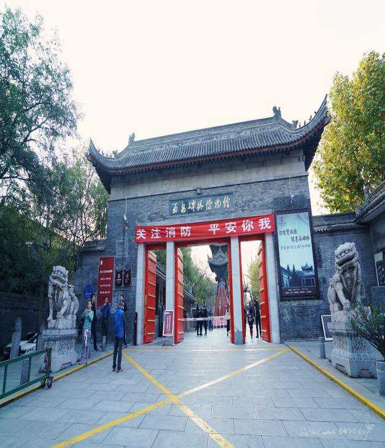
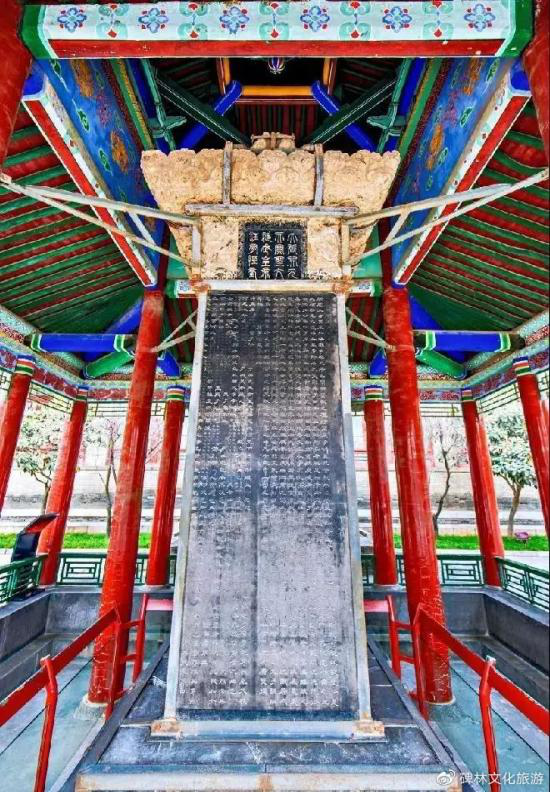

西安碑林博物馆（Forest of Stone Steles Museum）是陕西创建最早的博物馆，它以收藏、陈列和研究历代碑刻、墓志及石刻为主，成为在中国独树一帜的艺术博物馆。现有馆藏文物11000余件，其中国宝级文物19个号134件，一级文物535件。著名的“昭陵六骏”就有四骏藏于本馆。陈列由碑林、石刻艺术和其它文物展览三部分组成，共12个展室。现有7座碑室、8座碑廊、8座碑亭，加上石刻艺术室和4座文物陈列，陈列面积达到4900平米。
西安碑林创建于公元1087年，是收藏我国古代碑石时间最早、数目最大的一座艺术宝库，陈列有从汉到清的各代碑石、墓志共一千多块。这里碑石如林，故名碑林。
西安碑林内容丰富，它既是我国古代书法艺术的宝库，又汇集了古代的文献典籍和石刻图案；记述了我国文化发展的部分成就，反映了中外文化交流的史实，因而驰名中外。西安碑林是在保存唐代石经的基础上发展起来的。唐代人所称的石经，包括公元745年唐玄宗李隆基书写的和公元837年刻成的。